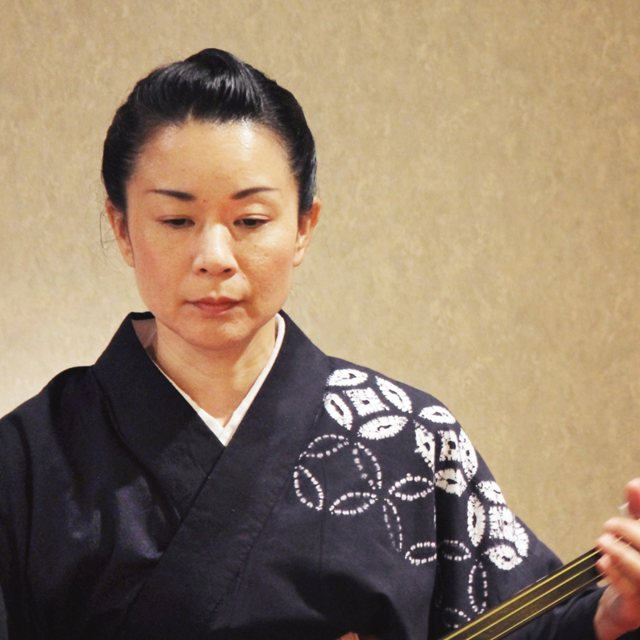

Nagauta Shamisen: Play the Music of Kabuki
Sixty minutes with a professional nagauta artist. Hear the music of the kabuki stage up close, learn to play a phrase yourself, and finish with a duet.
- Price
- ¥20,000 / person
- Duration
- 60 min
- Group
- 1–2 guests
- Area
- Kobe
- Beginners welcome
- English or Japanese
- 60 min
- Private (1–2 guests)
- ¥20,000 per person
- 知The music behind kabukiLearn what nagauta is, and why kabuki cannot happen without it.
- 聴A live performance, right in front of youThe artist plays a passage from the kabuki repertoire, just for you.
- 弾You will playA real phrase from the kabuki repertoire, and then a duet with the artist.
A sound you have heard, but never touched
If you have seen kabuki, you have heard nagauta. It paints the scene, carries the dancers, and lifts the story to its climax. Yet most eyes are on the actors, and few people really notice the musicians.
In this session, the music comes to the front. You sit with a professional artist, hear the shamisen up close, and then hold one yourself. By the end, you will have played a phrase of kabuki music together with the artist, and finished with a kakegoe, a traditional call.
The pieces will be announced soon.
How the hour unfolds
- 0–5
Welcome and tea
Settle in with a cup of Japanese tea. A short introduction to kabuki, and the role music plays on its stage.
- 5–10
The story of nagauta
An illustrated introduction: where nagauta came from, and what to listen for.
- 10–13
Live performance
The artist plays a passage from a nagauta piece. The real sound, first.
- 13–15
Short break
Take a breath, take a photo, ask a question.
- 15–42
Your turn to play
How to sit, hold the shamisen, and grip the plectrum. Open strings first, then one short phrase, until you can play it.
- 42–52
Duet and kakegoe
You play, and the artist joins you. Finish with a kakegoe. The best moment for photos and video.
- 52–60
Photos and conversation
Pictures with the artist, and time to ask anything you like.

Sajimaro Kineya
Nagauta shamisen · Master (shihan) · 30 years
She leads the whole hour at her own studio, from the live performance to playing together.
Read her profileWhat's included
- A private 60-minute session with a professional nagauta artist
- Use of a shamisen and all accessories (plectrum, finger guard, knee pad)
- Japanese tea
- An English guide card on nagauta and kabuki
- A take-home card: “How to listen to kabuki music”
- Photos and video of you playing, taken on your phone
Not included: transport to and from the venue.
Things to know
Price
¥20,000 per person. One or two guests per session.
Language
In English or Japanese. You choose when you book.
Location
Kobe. The exact address is sent after your booking is confirmed.
Nearest station and walking time will be shown here.
Who can join
No experience needed. You don't need to read music.
Age requirements and seating options will be listed here.
What to wear
Comfortable clothing. Loose trousers or a long skirt are easiest for sitting on tatami.
Payment
Pay online by card when you book.
Cancellation
Full refund up to 4 days before; 50% from 1–3 days before; no refund on the day. You can change your date once for free up to 4 days before. Details